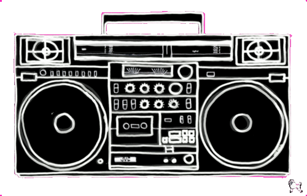

EMJ Music Player

Eagles - Hotel California
Kygo & Sasha Sloan - I'll Wait
Mike Posner - I Took A Pill In Ibiza
Hozier - Take Me To Church
Imagine Dragons - West Coast
Matt Maher - Your Love Defends Me
Nina Simone - Feeling Good
Aretha Franklin - Ain't No Way